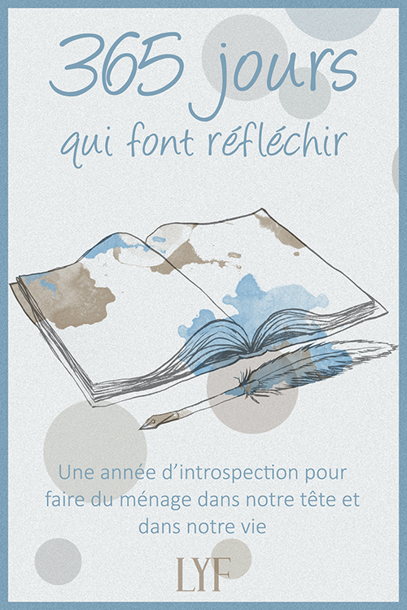
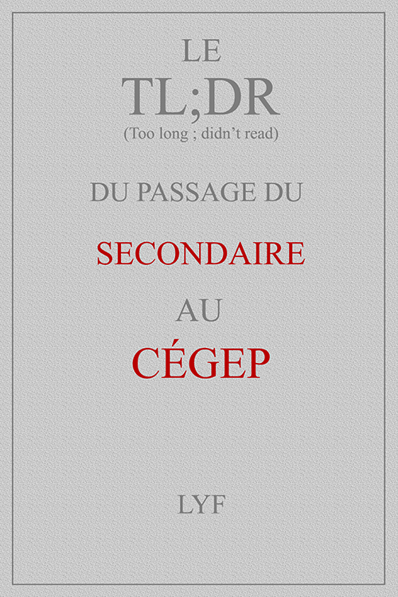
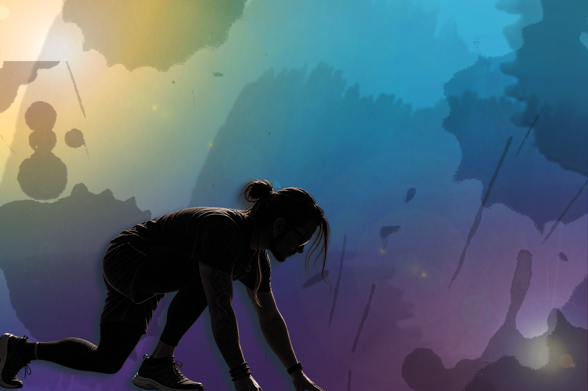
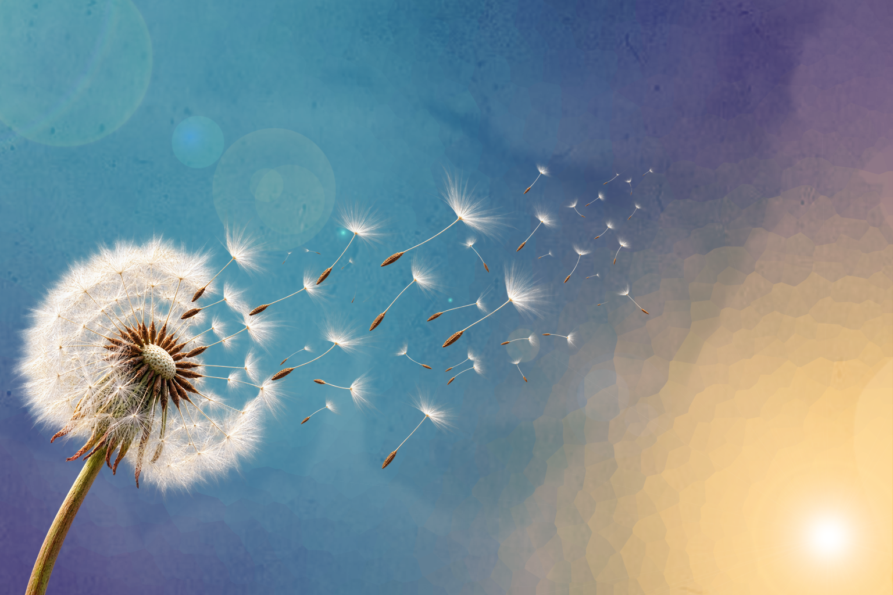
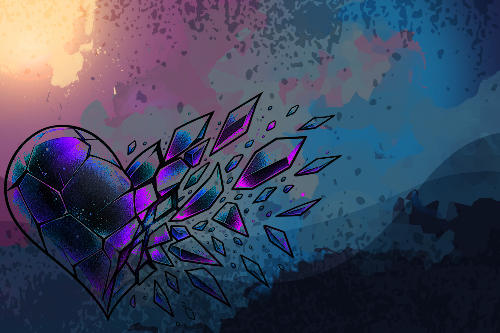
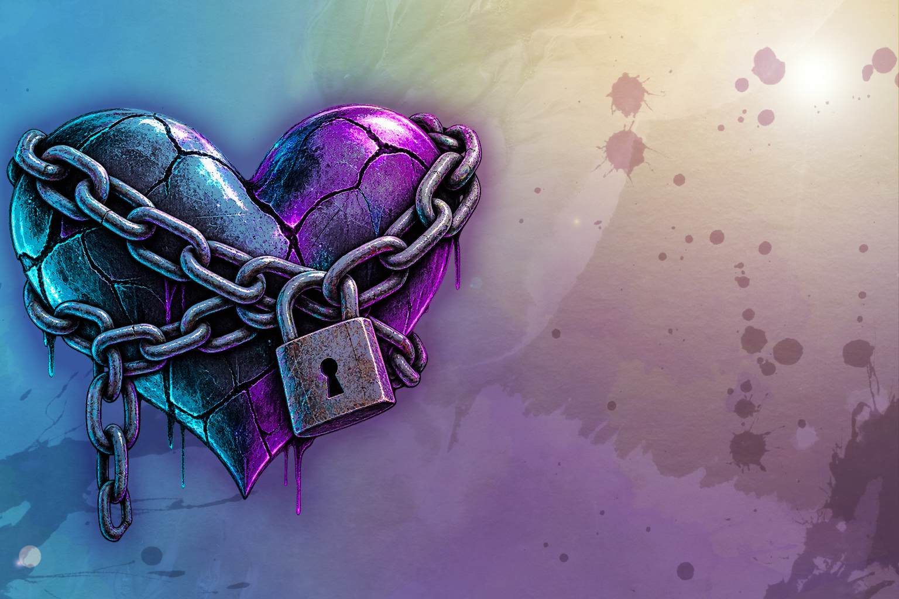
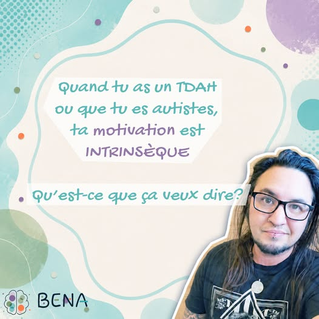
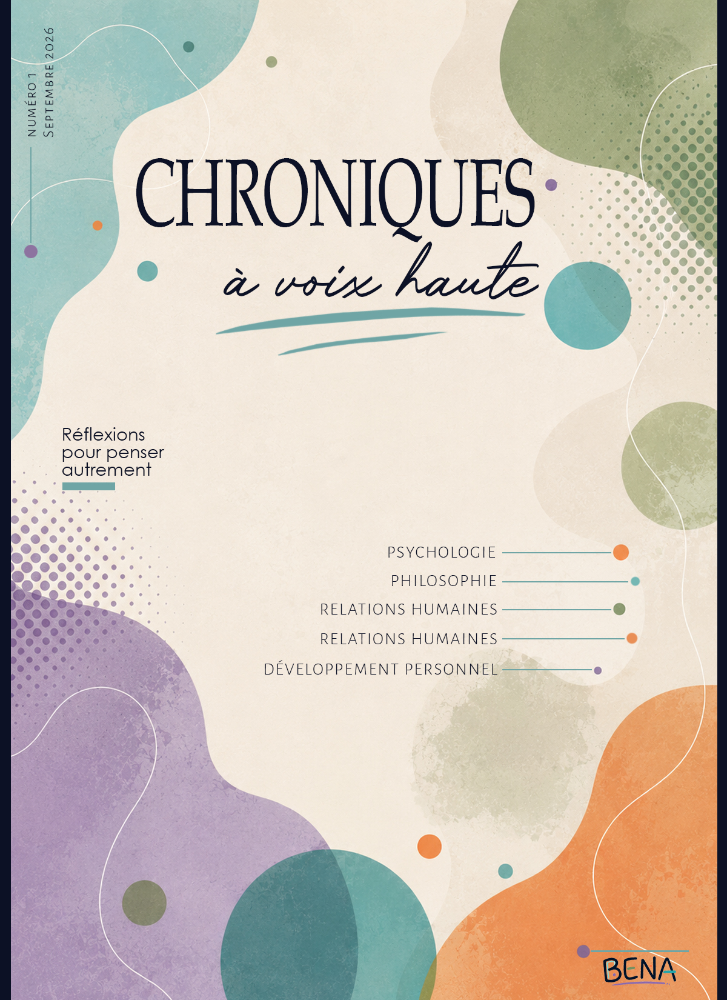

Une année d'introspection pour faire du ménage dans notre tête et dans notre vie.
13 thèmes, 365 questions différentes pour vous comprendre et avancer.
Articles, dossiers, Deep Dives, livres et réflexions longues pour explorer les relations humaines, le cerveau et la neurodiversité.
Des livres pour mieux comprendre, réfléchir et grandir.

Une année d'introspection pour faire du ménage dans notre tête et dans notre vie.
13 thèmes, 365 questions différentes pour vous comprendre et avancer.

Ce qu'on ne nous dit pas sur le CÉGEP
Des analyses approfondies et des dossiers complets pour aller plus loin.

Deep DiveÇa vient de où? Pourquoi on le vit? Et quoi faire?

Deep DiveÇa vient de où? Pourquoi on le vit? Et quoi faire?

DossierQuand la douleur n'est plus quelque chose qu'on vit, mais qui devient qui nous sommes..

Deep DiveQuand on peine à vivre sans l'autre..
Des réflexions, prises de conscience et partages du quotidien.

Des projets en préparation pour t'offrir encore plus de contenu.

Un magazine numérique sur le développement personnel, les relations humaines et le bien-être intérieur. Articles, réflexions et un peu d'humour pour apprendre sans se prendre trop au sérieux.
Premier numéro en préparation